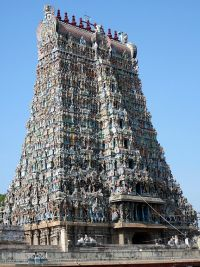

They were one of the three earliest Tamil Dynasties (Chola, Chera and Pandyan). The early Pandyan dynasty fell during the invasion of the rival Kalabhras. The dynasty came back during the early 5th century and then ruled the Tamil country. Their capital was a city named Madurai. They were in constant conflict with the Cholas and also conquered Sri Lanka and were masters at the sea and conquered the coast.
The beginning of the Chola Empire is shrouded in mystery. The most famous king was Karikala Chola led the way for a golden age for the Cholas. The Kalabhras displaced them but when they were removed they came into a second golden age, refining the art of ship navigation becoming master of it. They eventually controlled the eastern coast of India.
The Chera Dynasty is the last of the ancient Tamil empires. They rose to power during the 12th century and controlled the modern day states of Kerala and Tamil Nadu. They also traded a lot which brought prosperity to the country.